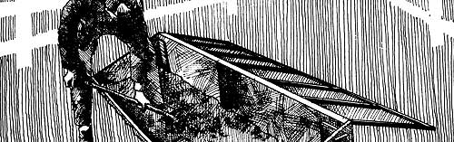
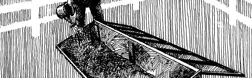
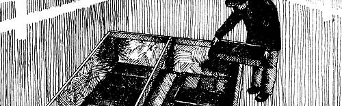
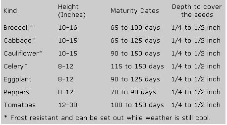

Building A Cold Frame And Hotbed
Reprints of articles from past Mother issues, including Building a Cold Frame and Hotbed; Selecting a Breed and Getting a Start; Farm Barter; Stalking the Wild Asparagus; How to Make Something Out of Nothing; Cache Lake County; How To Teach Almost Anything At Home.
By the Mother Earth News editors
March/April 1976
SPECIAL
SECTION
WHERE MOTHER
CAME FROM
During the nearly six and a half years that THE Mother Earth News (restricted) has been published, one, particular question has popped up time and time again from almost everyone who's talked to me about the magazine: "Where did you ever get the idea for a publication like MOTHER?"
Well, I got the idea from a lot of places.
From living the first seven years of my life on a 40-acre family farm (complete with goat, cow, pigs, chickens, orchard, big garden, etc.) and a fair number of my later years on a 144-acre largely "organic" farm in Indiana.
From decades spent with people who lived and worked outdoors at their own pace and in their own way, as a natural consequence of who and what and where they were.
From picking a great number of rocks out of the pasture by hand. From helping to build what-at the time-seemed like miles of terraces across washed-away hillsides. From pouring many cubic feet of concrete and otherwise remodeling old and constructing new barns, houses, and toolsheds. From throwing thousands of bales of hay to a herd of dairy cattle and then hauling much of that hay-in somewhat altered form-out to spread on the fields. From fishing some, hunting a little, and working a lot on those Indiana farms.
From the 12 years I spent on the road as cartoonist, writer, road manager for a performing group, draftsman, common laborer, aircraft electronics technician, display fabricator, salesman, gas station attendant, deliveryman, reefer hand, designer and builder and owner and operator of a trampoline center, factory worker, film director, model designer, and a whole lot of other things ... including bindlestiff.
From the files I've kept since I was six years old on wholistic agriculture, home businesses, do-it-yourself low-cost housing, wild foods, natural dyes, native lifestyles, recycling, conservation, and related subjects.
And from the wonderful, magical trail of printed words left by those who traveled MOTHER's path before I set ink to the first issue of this magazine. The Freedom Way (reprinted in its entirety in MOTHER NO. 1). The HAVE-MORE Plan (reprinted in toto in MOTHER NO. 2). The good old farm magazines of the 30's and 40's and very early 50's (back before agricultural fields were turned into thinly disguised factories). The magnificent mechanics publications of the 30's and 40's (when they still told you how to do things ... instead of how to consume trademarked building supplies and power tools and new cars). And a great number of books about living better for less, recycling, raising homestead animals, foraging wild foods, and all the other subjects that MOTHER regularly covers.
You'll find excerpts from a few of those books on the following pages.
From How to Grow Vegetables and Fruits by the Organic Method ©1961 by J.I. Rodale. Permission granted by Rodale Press, Inc., Emmaus, Pa. 18049.
Any listing of inspirations for THE Mother Earth News (restricted) just has to include mention of the work done over the years by J.I. Rodale, his son Bob, and the other fine folks at the Rodale organization in Emmaus, Pennsylvania.
Thanks to (I believe) my Uncle Charles, who used to exchange ideas on wholistic agriculture with Louis Bromfield . . . my father received some of the very first issues of Organic Gardening magazine that were ever printed. And the ideas therein-with others of our own-were what we used to rebuild "one of the most worthless farms in the continental United States" into one of the best back there in the 1940's.
Well, few of you folks reading this MOTHER have a 144-acre farm to restore . . . but almost anyone perusing this issue can (or should be able to) use the straight skinny on building cold frames and hotbeds. So here 'tis. Direct from Rodale Press.-JS.
What is the difference between a hotbed and a cold frame? If you want to grow peppers, tomatoes, eggplants, or any of the other heat-loving plants, a hotbed is best to grow them in., A cold frame has the same construction as a hotbed, except that there is no heat used inside it. In a cold frame you can propagate such cold-loving plants as cabbage, the broccoli family, cauliflower. Or you can use your cold frames to taper off and harden plants that have been moved into them from the hotbeds, to get them hardened between the hotbed and setting out into open garden or field.
There are two types of hotbeds. One is heated by a great deal of fermenting straw or fresh manures (preferably horse or chicken) which -has been placed in a pit two and one-half feet deep. The manure is packed down to a depth of 18 inches, well watered to soak. Then you shovel into the pit 5 to 6 inches of composted soil or good rich topsoil. This soil-which will make the seedbed-must be sieved fine.
MANURE HOTBEDS
The making of a manure hotbed is described by New Mexico extension horticulturists as follows:
The first essential in preparing a manure hotbed is to have fresh horse manure, preferably from grain fed animals. The manure should contain one-third straw or other similar litter. Sometimes there is insufficient straw in the manure for proper heating- If it does not have sufficient straw in the manure it may not ferment or, if fermentation does take place, the heat may be evolved rapidly and be of only short duration. About 10 to 12 days before the manure is to be put in the pit it should be placed in a flat pile 4 to 5 feet high. If it is dry it should be dampened with water, but not made soggy. The manure should begin to heat in 3 or 4 days after which it should be turned placing the inside of the pile on the outside of the new one. In 3 or 4 more days the manure should be ready to be placed in the pit. The manure is filled into the pit in successive layers of 4 to 6 inches and tramped firmly to secure uniform heating and prevent excessive settling. It is also desirable to place the soil on top of the manure at the same time, since higher temperatures that develop when the bed is fast made up tend to kill some of the weed seeds that may be present in the sop. Since a high temperature is likely to develop the first few days after the bed is made up, the planting should be delayed until the temperature drops to about 85 degrees or slightly lower.
If the seeds are planted when the bed is first made up, the high temperature is likely to kill the seeds or at least injure them. Manure heated hotbeds are usually economical to operate after the initial construction costs are paid. Temperature cannot be properly controlled in the manure heated hotbed because the rate of fermentation, and hence the rate of heat formation, is more or less the same on warm days as on the colder days. Thus the bed may be too hot or too cold depending upon the weather. The only means of controlling temperature is by ventilation, but unless much time is spent regulating the ventilation, the temperature is likely to vary considerably from the optimum for the growth of the seedlings.
ELECTRICALLY HEATED HOTBED
This kind of growing bed is made by arranging electric heating cables, 5 inches below the surface of the topsoil seedbed. No manure is needed for heating this type bed. The coils produce a steady heat day and night, while the manure is effective for a few weeks.
Here is the story of how one Pennsylvania organic gardener, Maurice Franz, built a hotbed and his reasons for building it:
We built a hotbed because we wanted to extend our growing season and garden activity and also because we wanted an assured source of organic, homegrown vitamins When we need them most-during the winter.
The hotbed will make this possible. Our garden activities will no longer be determined by the frost dates, October IS to May 1. And equally important to us, we will have a steady supply of organically grown vitamins A and C through the short, dark, severe winter days.
We finished the hotbed in two weekends, which included some unexpected last-minute scurrying for window frames. Except for excavating and leveling the ground and perhaps hauling topsoil 100 yards-plus from the garden, the work could fairly be described as light, pleasant, and instructive.
Our hotbed cost us $45; it is electrically heated. But we know now that we could have done it for $36-about 20 percent less with better planning. Against this, chalk up a big saving of $5-$6 a month for 5 months for salad greens.
The hotbed is approximately 6 feet wide and 6 feet long and is covered by two window frames. It is two feet high in the back and one foot in front with a taper of 12 inches. It is set 4 to 6 inches in the ground and faces due south.
It should be stressed that this is a rugged, durable hotbed which should last for 10 years without any additional cost. This means that our extra vitamins will cost us $4.50 a year for 10 years and practically nothing after that. But you should be able to cut this down to $3.50 a year, as you will see.
Because we wanted a hotbed that would function right through the winter, on bad days and good, we decided on electric heat. We also voted against halfway measures like using electric lights because we wanted a steady source of heat coming from below, automatically regulated by the varying temperature needs of the growing soil.
The General Electric ground heating cable set plus the automatic thermostatic control unit fills the bill. It is rated capable of maintaining soil temperatures from 30 to 100 degrees Fahrenheit in a hotbed measuring 6 feet by 6 feet-36 square feet total.
This heating system will add $1.50 a month to our light bill-about $7.50 a year-the local power company advises. But we think it well worth our while because we would spend 4 times that amount-$30-over the winter months on salad -greens. And we are convinced that the homegrown produce will not only be better tasting, but because it is picked just before eating, it will be packed with vitamins A and C just when we need them most.
We further wanted a frame for this heating unit that would stand handling without breaking up, that would resist soil rot sturdily, and would also retain heat thriftily. On the advice of the local lumber dealer we chose yellow or western fir, ordering planks two inches thick for the extra insulation and strength. We reinforced this rugged frame at the comers with two-by-twos and then set this massive box 4 to 6 inches into the ground.
For bottom insulation, beneath the heating cables, we spread a two-inch carpet of vermiculite, covering the cables in an inch of sand (you can use ordinary sod). Over this we placed a protective wire netting and finally added 4 inches of rich topsoil as a growing medium.
BUILDING THE HOTBED
Putting the frame together is actually the easiest part of the operation. Order the wood you need, specifying that it is precut to size by a power saw. This makes for accuracy and square, even ends. You will also find that hand-sawing 2- by 12-inch boards is no cinch, especially if you order weathered, used wood. Also drill nail or screw holes before assembling to speed the job and eliminate splitting.
You must also weather- and ground-proof your wood with a protective covering. We used linseed oil because it will not give off any chemical reaction which can hurt soil life or the healthy organic growth of our vegetables. It was also recommended by the lumber dealer as a highly satisfactory protective agent. Painting it on with a large brush should hold ground rot off and double the life of our already sturdy frame. Do not neglect painting your frame with linseed oil or a similar protective medium; 20 minutes' painting can add years to the life of your hotbed.
Digging the excavation for the frame is harder and comes first. After picking your site, study the soil before you start digging. If it is clayey and packed, try to loosen it with a rotary tiller-you'll save time and energy for other tasks. The amount of soil you have to remove will amount to 18-20 cubic feet.
Be sure to make the excavation at least 3 inches wider and longer than the size of your frame. This oversize pit will make it easy to fit your frame into the ground, about 4 inches below the top of the soil. If your hotbed will be 70 inches wide by 67 long, make your excavation 73 inches wide by 70 long.
Setting your frame level on a level, secure ground footing is not hard if you plan ahead. Do not put your frame together until your excavation is ready for it. Instead, take the 4 baseboards of your frame and fit them into place Just where they will go. Take the back board, upend and place it in the back of your excavation, from corner to corner. Check it with your spirit level and make the necessary adjustments until it is level and rests firmly in place.
Now take the board for the left side. Upend it and place it where it will go. Check the level and make your adjustments. Repeat with the front board and the other side. If you keep them level as you go from comer to comer, your frame will have a secure, satisfactory footing. Then, and only then, assemble your frame, give it its protective coat and put it into place.
INSTALLING THE HEATING UNIT
Start the actual growing bed off with a two-inch layer of vermiculite. It is an excellent insulator which will hold downward loss of heat to a minimum and also permit ready drainage. It is a matter of moments to spread it and then level it gently using a board. Then, working slowly and carefully, lay your heating cable on it. This is a single continuous wire ending in a conventional wall plug which connects with the thermostat. Attach the thermostat securely to the frame, but only after you are satisfied with the layout of your heating cables. The General Electric people include a full set of instructions and diagrams which are extremely easy to follow.
Next, cover the cables with one inch of sand or soil. You can save $2 by using soil instead of sand, and there is no reason why you should not. Over the sod place a protective wire screening with about one-half inch mesh. This will keep your trowel out of the heating system.
Finally, top off your hotbed with 4 inches of rich, fertile topsoil. We took ours from the garden and screened it for evenness, then mixed the following growing medium: topsoil-3 parts; wood mold and sand-one part each. We then enriched this with 3 pounds of cottonseed meal, bone meal, and granite dust mixed on a 21/2-6-6 formula. This is twice as rich as seems necessary, but the roots will not be able to reach down as deep in our rather shallow bed as they would in the garden.
And, now that we have spent our $45 and stand committed to spend $1.50 more on electricity each month, what have we gained?
To begin with, we have extended our season 4 months. We'll get an early start in February with our greens, lettuce, mustard, and spring onions. By March 15 we will move our early cabbage and celery from the window flats to the hotbed until they can go into the garden-about a month later.
When the cabbage and celery are hardened off we will replace them with peppers, tomatoes, and eggplant from the inside window flats. Indoors we'll start cucumbers and melons in pots, moving them into the hotbed about May 15 when we transplant the peppers, tomatoes, and eggplant outdoors.
When the fall comes, we'll get ready for a winter supply of vitamins by starting endive, escarole, romaine, kale, and lettuce in the garden. That should be before Labor Day, and we figure that we'll transplant them to the bed by mid-October-just about the time of the first hard frosts here-abouts.
CONSTRUCTION MATERIALS
Concrete and cinder blocks are often used for the construction of the walls of hotbeds, cold frames, and small plant houses, on account of the ease with which they can be laid. In some localities concrete blocks 4 inches thick can be obtained, and walls constructed of these occupy less space than those made of the 6- or 8-inch blocks. Where concrete blocks are used for the front and back walls of the beds, it is necessary to put up forms and pour the top of the ends in order to obtain the correct slope. The 8-by 8- by 16-inch concrete and cinder blocks are especially adapted for constructing the walls of double beds with a ridge through the center and covered by means of two lines of hotbed sash or cloth. The top layer of blocks should be crowned with a layer of cement mortar about an inch in thickness to prevent water from entering the cavities of the blocks. Cinder blocks are better insulators against the passage of heat than concrete and, in addition, have the advantage that nails can be driven into them where wood is being fastened to the block walls.
LOCATION
Hotbeds and cold frames should always be located on well-drained land that is free from depressions or danger of flooding during heavy rains. A location near the house where the beds can be given frequent attention is desirable. The beds should be protected on the north by a group of buildings, a grove of trees, a tight board fence, or an evergreen hedge. In many cases windbreaks, consisting of pine boughs or bundles of corn fodder set against supports, are employed for protecting the beds from cold winds. A location with a southern exposure and adequate wind protection on the north and west is ideal. In all cases, protection from cold winds, the securing of direct sunlight, and convenience in the matter of tending should be the main determining factors in the selection of a location for any type of plant bed.
Plant beds and small greenhouses built well below the level of the ground require less heat than those that are entirely above ground and more exposed. This principle applies especially to the construction of sash-covered houses that are heated by flues, stoves, or electricity. Special care must be taken, however, in the selection of a location for beds and houses that are partially below ground, to provide good drainage in order to avoid flooding the beds during rainy seasons.
TESTING SEEDS FOR GERMINATION
Some seed will deteriorate with age and, though it is carefully prepared, may refuse to germinate. Before planting homegrown seed and depending upon it in spring to produce a crop, it is wise to make a germination test. Ibis is done by duplicating as far as possible the conditions of warmth and moisture that the plants need when growing in the garden.
Twenty or more seeds are counted out for the test, and the quantity noted. They are then placed on a layer of absorbent material in a saucer. Absorbent cotton, blotting paper, or heavy cloth may be used. Sterile cotton is recommended, because it will not mold as quickly. A second layer of the material is placed over the seeds, it is sprinkled with water, and excess water is poured off. The seed may start to germinate in 24 hours, or it may take 2 or 3 weeks, but meanwhile the covering material should not be allowed to dry out. The top layer should be lifted from time to time to allow air to reach the seed. If mold appears near the seed, the covering layer may have to be removed entirely. Seed is germinated, for testing purposes, when it has swelled and put forth a sprout.
The germination tests will show whether the seed should be used at all, and how thickly it should be sown. Even if only a small number of seeds germinate, it may be wise to use the seed, because unusually strong plants are said to result from planting old seed.
The following is a list of vegetables with the number of years indicated during which their seeds can be expected to be viable. If the seed is older, it should be tested before using corn, onion, parsnip, soybean, salsify, two years; bean, leek, parsley, peas, 3 years; carrot, mustard, pepper, tomatoes, 4 years; broccoli, cabbage, cauliflower, kohlrabi, lettuce, okra, pumpkin, radish, spinach, turnip, 5 years; beets, eggplant, melons, squash, 6 years; celery, 8 years; cucumber, endive, 10 years. Whether the seed is purchased or homegrown, tests should be made if it exceeds the above ages.
Few seeds will germinate as soon as they ripen. Most of them require a rest period of at least a month, and in some cases as much as a year. There are exceptions to this. Some grains, for instance, will sprout in the seed head if the weather is wet when they ripen. A few plants such as beans, sunflowers, lilies, and mustard, will start to sprout in a few days. Others, like carrots and parsnips, need a month or more before they are ready to grow. And some trees and shrubs will not germinate in less than a year.
PLANTING SEEDS
In the germinating hotbeds or cold frames you plant seeds plentifully, cover them lightly, and keep the rows one inch apart. You may later thin out to suit. In planting lots of seeds remember this: While most seeds will produce sturdy plantlets, others will be thin or weaklings. With plentiful planting you may pluck out all but the finest, sturdiest plants.
A must to remember: The grower must constantly watch moisture and heat with an eagle eye. You must not allow the heat to rise too high, or above 75-80 degrees while the plants are small. If the growing beds get too hot-and there is no ventilation-the hundreds of plants may easily damp-off and die. To ventilate, simply raise the lids a bit. Leave lids closed at night.
STARTING IN FLATS
In a flat, the bottom quarter to half of the flat should be sphagnum moss. Soil which is added to cover these layers should be moist, not wet or dry. Seed should be thinly sown in rows or in circles in the pot, and in rows in the flat. If more than one kind of seed is planted in a container, the seeds should be chosen to germinate in about the same length of time and to grow at the same rate so that all will be ready for transplanting together. After the seed has been placed in its rows, sand or fine compost is sifted over it to the correct depth. The soil may then be firmed and watered, either with a very fine misty spray from above, or by plunging the container into water almost as deep as the soil. When wet patches begin to appear on top of the soil, the container should be removed from the water and drained.
Seed flats may be covered to preserve surface moisture until germination starts. Temperature for germination of seed may usually be somewhat higher than the plants will bear after growth has started. (Exceptions are the seeds which need a period of frost before they will germinate.) Soil should be kept moist, but not wet, during this period. If the top of the container is covered with glass or paper, the cover should be lifted occasionally to permit air to circulate. At the first sip of fungus growth, the cover should be removed.
As soon as the first green begins to appear, covering should be removed from the seed pot and it should be placed in a southern window. Gradually, as the seedlings sprout and the roots stretch down into the pot, watering may be lighter and less frequent, but the container should never be permitted to become dry. If seedlings are too thick they must be thinned immediately. Occasionally when fine seed is planted it will come up unevenly, with thick patches in places in the pot. These patches should be thinned by means of tweezers, because crowding at this stage will almost inevitably result in damping-off.
WATERING
Water the beds daily after planting. Use a fine can sprinkler and tepid water. Don't muddy the seedbed; just water it enough to be nicely damp. One gallon sprinkling can to a 6-foot section is generally adequate. For added moisture, beds can be opened to a warm, quiet min.
Once the plants have sprouted and are several weeks old-and there is the delightful feeling of their crowding one another-lift the lids more and more. As the growing season progresses, and the bedding plants grow faster, there will be nice days when you should take the lids off and get the full benefit of the sun.
First transplanting: When your plants have grown to a size large enough to be handled, they are ready to transplant over into the cold frame beds. There they will grow rapidly and harden off so that the shock of final planting into the open garden won't hurt them.
About the only thing that can harm growing plants in the hotbeds or cold frames is overheating, drying out for lack of water, or being attacked by the fungus disease known as damping-off. This damping-off or "black root" or "wire stem" in the seedbed is caused by about a half dozen or more fungus parasites. They usually grow near the surface, and enter the tiny plants at the point where they emerge from the ground. All of these fungus parasites require a high moisture content of soil and air for quick growth.
To prevent trouble from damping-off the best defense is to keep the air and surface of the seedbed as dry as is consistent with good growth of the plants. Getting the beds heated without proper ventilation, and not allowing the moisture to escape, is what causes damping off.
PROPER SOIL FOR PLANTS
Make a mixture of two parts good garden loam, one part fine, but sharp sand, and one part leaf mold, peat, or old decayed compost or manure. Mix well and put 8 inches of it into the bed. It's a good idea to let it age for several months before seeding. Sift the soil mixture through a one-fourth-inch mesh screen to get it in condition for planting, When screening the mixture, place coarse screenings in the bottom of the flats to provide better drainage.
There is enough plant food in this mixture without adding manure or organic fertilizers high in nitrogen. Used too soon, these often cause the young plants to grow too rapidly, unbalancing their natural growth.
When to Plant: Two separate compartments are helpful in the cold frame. All vegetables do not require the same temperature for germination. Where some will sprout in the heat, others will rot. To get the maximum number of plants from the seed, the plants must be divided into two groups. Celery, cabbage, lettuce, cauliflower, and broccoli require low temperatures for germination. Plant these together in one section of the cold frame, dropping the seeds evenly in rows two inches apart. Plant about the first week in April or 8 weeks before transplanting time. An inch of fine mulch may be spread evenly over the seeded area to keep the ground moist and to discourage early weeds. The growing plants will push their way through as they grow. Water lightly, then close the frame.
About the middle of April, when the sun is warmer, plant tomatoes, peppers, eggplants, muskmelons, summer squash, and cucumbers. Plant these in the other half of the bed. The plants in the first half of the bed should have sprouted by now and need ventilation. Close the cover on the tomato bed until the plants sprout, then ventilate along with the other half.
Cucumbers, muskmelons, and summer squash are grown in parts of milk cartons and set out in the open after danger of frost. This is not absolutely necessary. It merely helps produce an earlier yield.
Ventilation: No matter what the germination temperatures had been, all growing plants do best around 70 degrees. Regulate temperature each day by slightly lifting the two sashes. On cold days, allow the beds to remain closed. Never lift covers into the wind. A cold wind can damage the tender shoots. Open away from the draft, and secure the windows so they will not be broken.
Nevada's experiment station points out that flats, cold frames, and hotbeds will bring many plants into production a month to 6 weeks earlier than when they are sown outdoors.
The minimum maturity dates given here indicate the length of time required for maturing after the plants are set in Nevada's high altitude gardens. At elevations below 5,000 feet, and in favorable seasons, some fruit may ripen in a shorter period.
|
The cold frame should have 4 inches of rich, fertile topsoil which has been screened and mixed with sand and humus, Prior to starting plants in the spring, the soil should be turned lightly and receive an application of organic fertilizer. |
 Water the cold frame daily after planting, using a fine can sprinkler and tepid water. One gallon sprinkling can to a 6-ft. section is generally adequate, and beds can be opened to a warm, light rain for added moisture when necessary. |
 A cold frame is also useful for hardening off seedlings prior so planting them outside.This step can be started about one %week before transplanting time, placing the plants in the cold frame for a longer time each successive day. |
|
 |
 |
 |